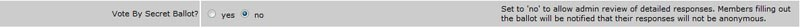

Working with Voting: {{surveypanel.msg}}
The Survey and Online Voting features both allow you to design electronic surveys or opinion polls. This is a good way to determine how your site visitors feel about things, or even to perform committee or board elections. We suggest that you design your survey on paper before you begin the electronic design. That will help you determine the most effective sequence of questions and the informational text you will want to include to make taking the survey understandable to your visitor.
Like other Features, you can create a button or embedded link that goes to the Feature itself, which will display a list of all available surveys, or one that goes directly to a specific survey.
Select the “Features” button from the Admin Panel and then locate the Survey or Online Voting feature. If you select “Edit,” you will see a screen similar to the one below.
Site Title - If you prefer to name the feature something other than “Survey” or "Online Voting" you can change the name here.
Feature Admin - Selecting a feature administrator from the drop list of your available feature administrators allows you to share the survey/vote creation and monitoring duties with someone else. Use the drop-down menu to display a the list of feature administrators (set in the Users tab on your admin panel)
Require User Authentication - Setting this option to "yes" requires site visitors to log in before accessing the survey/online vote.
Vote by Secret Ballot? - In the online voting feature only, you have the option to disable the secret ballot option. This would allow a site administrator to view how each user has voted on a vote (instead of the default method, where you can view the results only). If you want to disable this, be sure to do it before you create the vote.
When you select “Manage” from the feature screen next to the “Surveys” or "Online Voting" feature, you will see a screen similar to the one below.
To create a new survey/ballot select the “Create New Survey/Ballot” link and a screen like the one shown below will be displayed.
Title - Enter a short title for the survey, like “New Playground.”
Description - Enter a general description of the survey/ballot, what you are trying to accomplish with the survey, and any instructions you want your visitors to follow. The description area is a text area and all the formatting features are available.
Response Period – Select the beginning and ending date for your survey/ballot by either entering a date or clicking on the calendar icon and selection a date.
Display – Set this to “yes” initially. Once the survey/ballot is completed, you can set this to “no” which will cause it not to be displayed to your visitors, but will retain the results for your review in the future.
Once you are satisfied with this section, select “Save Properties and stay here”.
You are now ready to begin entering the specific survey questions. To do that, select the “Create New Survey/Ballot Item” link and you'll see a screen similar to the one below.
Item Text – enter the survey question in this area. The formatting bar may be used to format the text in this area.
Online Voting Only - Below the item text, you'll see an option to allow write ins. Set 'yes' if you want to allow your users to write in responses (online voting feature only)
Number of picks allowed – is used to define how your visitor will respond to this question. All selections are made from the drop down menu. There are four unique pick types:
- Choose 1 only – which allows your visitor to select only one item from the choices available.
- Choose x or less (2-9) – which allows your visitor to make multiple selections, but not more than the maximum number you select.
- Choose all that apply – which allows your visitor to choose as many responses as they want.
- Choose exactly x (2-9) – which allows you visitor to choose the exact number of responses that you define.
When you are finished with this question, select “Save Properties and Return to Survey/Ballot” to continue the question defining process.
There is no limit to the number of questions you can include on a survey or ballot, nor is there any limit to the number of surveys/votes you create. There is, however, a limit to the patience of your site visitors. We strongly suggest that you keep your surveys/votes short – just a few questions – and don’t over-survey your customers!
Once your survey is “active” on your site, you will want to monitor the progress. To do that, select “Features” on the Admin Panel and “Manage” next to Surveys or Online Voting on the features screen. You will see a screen similar to the one shown below.
Select “View Results” to see a detailed report on the survey. Once the report is on the screen you can print it by selection “Printer Friendly” in the upper right corner of the screen and use your browser’s print capability (File/Print or Right Click/Print).

If you would like to remove the survey results, without deleting the survey, select “Delete Results”. This is useful if you plan to run the survey again later.
View Detailed Results
View Voting Log
There are a couple options when deleting a survey/ballot. Next to the 'view results' option, you can 'delete results'. If you would like to remove the survey results, without deleting the survey, select “Delete Results”. This is useful if you plan to run the survey again later.
Or, if you want to remove the survey/ballot entirely, just click the "delete" link for that survey. You'll see a confirmation screen similar to the one below